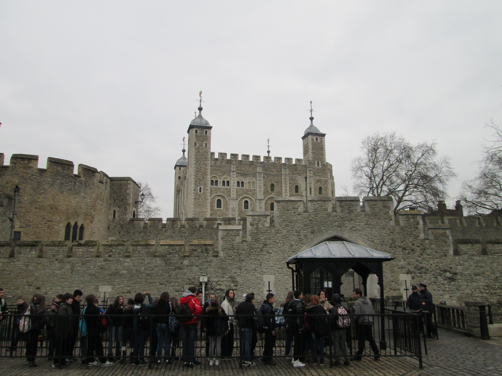

Hello!
Welcome to my website! My name is Steve, and I'm an English teacher in Busan, South Korea. I dabble in computer programming and website building. My interests include movies, traveling and studying Korean. More about me...
Pictures
One thing that I love to do is to take pictures. I'm not a photographer...just a man with a smartphone and some fingers. Here are a couple of pictures of places that I've traveled to:



Bonus points if you can guess which countries these shots were taken in! Check out more pictures here...
한국어 (Korean)
한국어 (Korean)
안녕하세요? 저는 스티브입니다! 6 년 전부터 한국어 배우는 것을 시작했어요. 계속 배우고 연습하고 싶어요!
I have been studying Korean for about 6 years now, starting from when I went to Korea in 2011. I want to continue to study and practice and hopefully get better!
여기에 크리크 / Click here for more